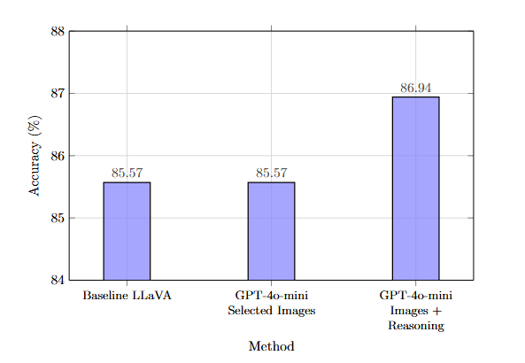

Summer 2026 · Incoming
Software Engineer Intern, Meta
Menlo Park, CA.
Joining the Meta software engineering intern program for summer 2026.
Joining Meta, Summer 2026
A junior at the University of Washington studying computer science. Most recently a software engineer intern at Amazon and a vision-language research collaborator with Dr. Chun-Liang Li at Apple. Joining Meta as a software engineer intern in Summer 2026.
Recent work
Summer 2026 · Incoming
Menlo Park, CA.
Joining the Meta software engineering intern program for summer 2026.

Summer 2025
Scaling Planner team. Sunnyvale, CA.
Built automated scaling solutions on the Scaling Planner team to optimize AWS resource allocation, then designed an AI-powered diagnostic assistant on top to streamline service-owner workflows. The assistant runs on a Python Lambda orchestrator with a retrieval-augmented pipeline, fusing platform documentation and live operational data to answer questions in context. A separate ingestion pipeline vectorizes data from seven internal microservices into OpenSearch and S3 for real-time k-NN retrieval.

Spring 2025
Vision-language research with Dr. Chun-Liang Li, in CSE 493.
Researched vision-centric test-time scaling for VLMs using Visual Sketchpad-inspired augmentations (depth maps, segmentation masks, crops). Built an experimental pipeline with LLaVA-OneVision and MMBench to evaluate three augmentation strategies, then a hybrid system pairing GPT-4o-mini augmentation planning with LLaVA-OneVision inference as a lightweight alternative to full Visual Sketchpad methods. Wrote a project on the work.
2024 to 2025 academic year
University of Washington. Seattle.
Formulated 13 AI coding projects covering neural networks, reinforcement learning, and NLP for 100+ students. Led 5+ lectures on transformers, RLHF, and multimodal learning, building 10+ slide presentations along the way.
Selected work
Hacktech 2026 · Listen Labs finalist
An LLM-driven simulation of how opinions propagate through a social graph. Each agent is given a distinct personality and an initial belief; users introduce a topic and watch the network shift, with the simulation distinguishing genuine belief change from mere agreeableness. Built in a hackathon weekend with TypeScript on the front and Python on the back. Finalist for the Listen Labs “simulate humans or societies” track.
View on GitHub

March 2025 · Shipped on the App Store
An AI-powered journaling app on the Apple App Store. Built with React Native and TypeScript on the front, an Express and PostgreSQL backend on AWS EC2 and RDS in back, with OpenAI GPT-4o-mini wired in for real-time entry analysis, mood tracking, and personalized insights. Custom prompt engineering and multi-dialogue memory make replies feel continuous across sessions.
100+ registered users 400+ entries processed
View on GitHub

April 2024 · Computer vision
A custom ResNet-style CNN with residual connections, data augmentation, and batch normalization, trained from scratch in PyTorch on the CIFAR-10 dataset (60,000 images across 10 categories). Reached 90% test accuracy in ten epochs through architecture choices and hyperparameter tuning.
On GitHub
A note
Outside the laptop: the gym, long walks, basketball when there is a court free, and the Chinese Student Association at UW, where I serve as president. The most interesting work, to me, sits at the seam where models, services, and people meet inside a single running system.
Get in touch
Joining Meta in Summer 2026. Open to full-time SWE roles after graduation in 2027, research collaborations.